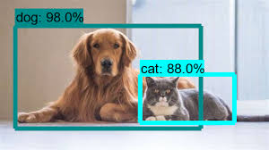
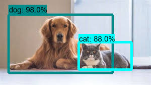

RESEARCH
 

Object Detection And Voice Assistance For Blind Person
The objective of this project is to make a computer application which will detect obstacles that come in the path of blind person when he walks on the road due to which the blind person faces lot of difficulties while walking. It is been observed that the computer application detects objects and give voice assistance i.e voice messages about the obstacles to the blind person and navigating him to reach his destination.